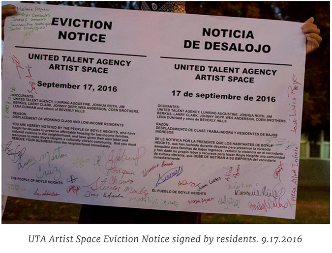

UTA Artist Space
Owner: CHASE LEGACY LLC c/o MARGARET STOCKWELL
This gallery—a project of the billion-dollar media firm United Talent Agency—was conceived of a gross combination of movie industry riches and stark real estate speculation. It serves some of the most well known and well off celebrities in the world who are looking to extend their influence in the fine art world—such as “opportunities” to open new galleries. Joel Lubin, a media agent for wealthy Hollywood elites, became a board member for the Institute for Contemporary Arts, Los Angeles (ICA LA). The UTA executives could have easily leased gallery spaces on Melrose Avenue or in Beverly Hills, but chose to fuel the predatory arts-as-investment scene taking over Boyle Heights.

At the gallery’s first opening in September 2016, they were served with a people’s eviction notice by Union de Vecinos members and the Boyle Heights community. Angry residents demanded the firm leave the neighborhood immediately as it did not provide needed services or bring any benefit to the community. (Adding insult to injury, the opening exhibition romanticized the decades of violence and pain Boyle Heights endured during the War on Drugs with Larry Clark’s “artistic portrayals” of local working-class youth battling addiction and alcoholism.)

In fall 2018, UTA quietly closed gallery operations at this site.
The current owners, Chase Legacy LLC, offer the space
for sporadic studio shows and events. The ownership consists of a family trust managed by a UCLA researcher living in West Los Angeles.